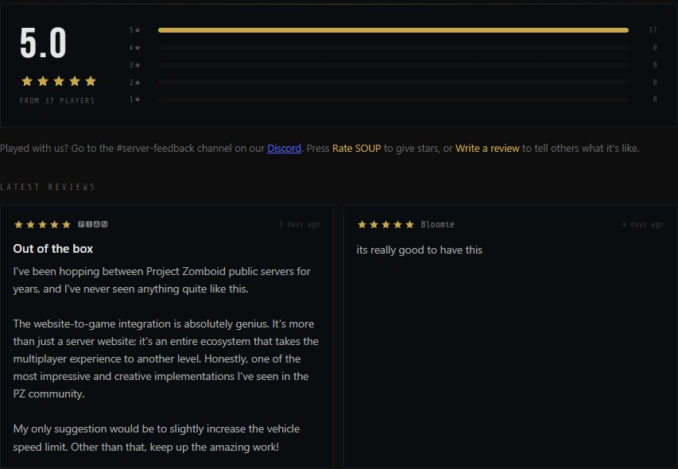

What it is
Soup is the platform underneath a Project Zomboid multiplayer community. It runs across three completely different surfaces (a Lua-modded game server, a Python Discord bot and API, and a Next.js web app) and presents a single, consistent world to its members. A shop you see on the website is the same shop you walk up to in-game. A reputation score generated by an LLM is visible in Discord, on the leaderboard page, and on your in-game character profile.

This season (launched 10 October 2026, after a public beta from 21 September) 399 player accounts have reached the game, on a server with 24 slots. The platform handles their economy, their progression, their shop network, their seasonal events, their leaderboards, and their interactions with Zombita, the AI administrator who works across all three surfaces.
Players rate it 5.0 from 37 ratings. One review, from a player who has hopped between Project Zomboid public servers for years, calls the website-to-game integration "one of the most impressive and creative implementations I've seen in the PZ community".

Many of the in-game and website screenshots on these pages were taken by the server's players CiBo, Warrior and Dish, and are marked with their names.
Every screenshot, including the ones not used here, is in the Gallery.

The hard part
The technical challenge isn't building a Discord bot, or a game server mod, or a web app. Each of those is a known problem. The hard part is keeping all three in sync as a single system: same source of truth, same state, same identity layer, same economy, same reputation, with users interacting from any surface at any time.
- Three runtimes, one state. Lua running inside Project Zomboid's Java VM, a Python Discord bot with a FastAPI backend, and a Next.js web app on Cloudflare, none of which natively share memory, schemas, or even basic data types.
- Real-time bridging. A player buying an item in-game updates the web leaderboard, fires a Discord notification, and decrements the treasury (all within the time it takes to close a dialog box).
- Identity unification. The same person is a Steam ID in-game, a Discord snowflake in chat, and a session token on the web. Linking those is the prerequisite for everything else.
- Operability. A community lives or dies on whether its admin can fix things at 2 AM. Soup ships with a full admin layer (RCON from the web, restartable services, in-game item granting, three tiers of server wipe) so an admin can intervene from anywhere.